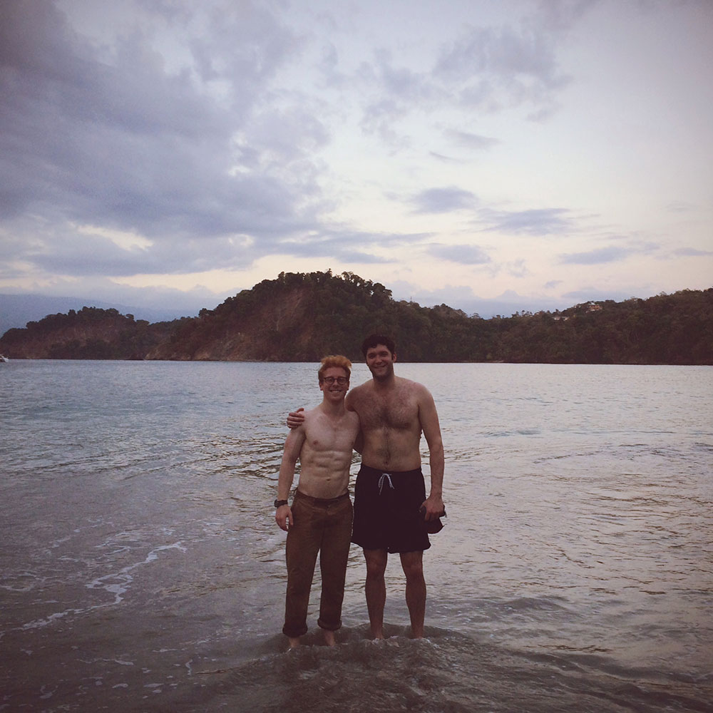
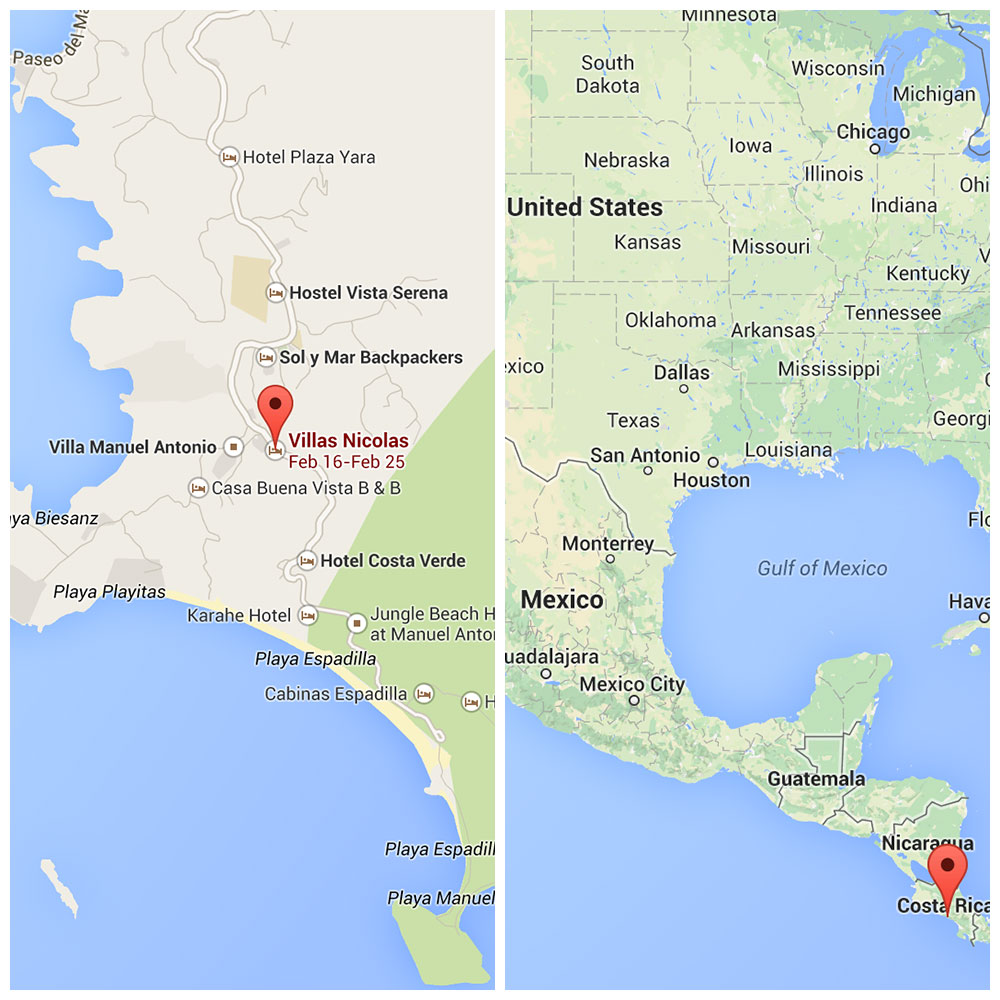
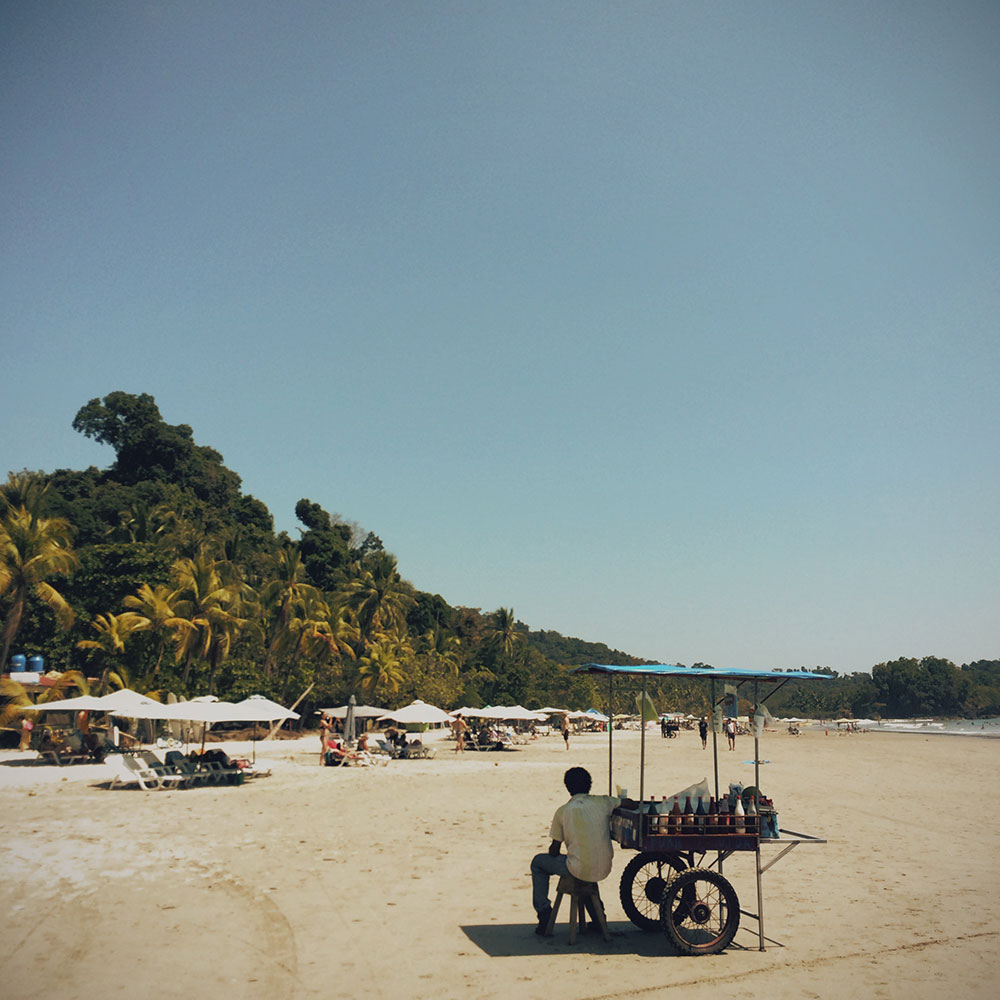

ClojureRica
@r00k
and
@chrishunt
learn
ClojureScript
in
Costa Rica

Chris and Ben pose for a photo after a workout on the beach in Manuel
Antonio.

Ben and Chris worked from
Villas Nicolas
in Manuel Antonio.

Manuel Antonio National Park, Costa Rica.
Game of Life in ClojureScript. View the
source
on GitHub.
 Ben rides a horse through Los Quetzales National Park, Costa Rica.
Ben rides a horse through Los Quetzales National Park, Costa Rica.
 Mariachi (horse) leads Chris through Los Quetzales National Park, Costa
Rica.
Mariachi (horse) leads Chris through Los Quetzales National Park, Costa
Rica.
Maze Generator and Solver in ClojureScript. View the
source
on GitHub.
 Manuel Antonio National Park, Costa Rica.
Manuel Antonio National Park, Costa Rica.
 Cafe Agua Azul,
Manuel Antonio, Costa Rica.
Cafe Agua Azul,
Manuel Antonio, Costa Rica.